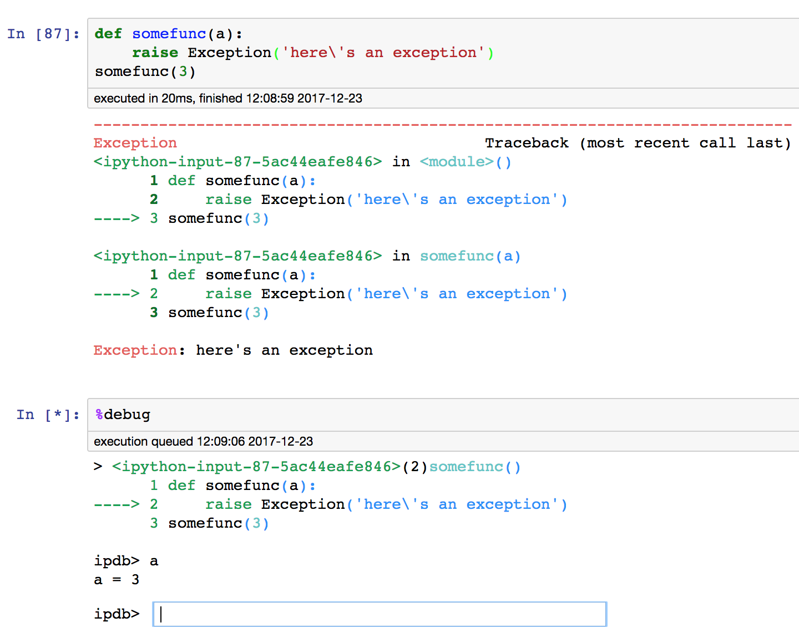
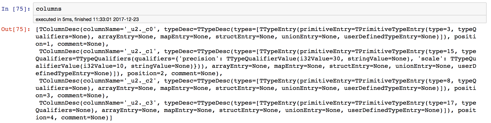

Debugging in IPython
Table of Contents
Pdb is a great builtin python debugger which provides a interface similar to gdb. However, it is not convenient to start pdb for specific statement. And pdb is not the best interface to interact, inspect complex objects and continously test statements.
IPython kernel provides some magic functions for triggering pdb automatically or manually. It can show source code with syntax highlighting in pdb. Moreover, if you trigger pdb in ipython, you can keep complex objects for further inpection with the pleasant ipython interface.
1 IPython pdb magic functions
%pdb magic function is for making IPython call pdb when a exception being
raised. This is very useful for rapid inspecting stack and variables when
exception happens.
1: %pdb on # turn on 2: %pdb off # turn off 3: %pdb # toggle
If you forgot to turn %pdb on before an exception was raised, you can use
%debug to invoke pdb for last exception. Before another exception is raised

Another function of %debug is to invoke pdb for debugging a statement directly. You can set a
breakpoint in the jupyter notebook cell rather than set it with the break pdb
command everytime pdb is started.
# the pure pdb way pdb.run('mymodule.test()') # ipython debug magic way %debug -b path/to/mymodule.py:123 mymodule.test()
For debugging a python script file, use %run -d magic.
%run -d -b [FILE:LINE] PATH/TO/PYTHON/SCRIPT.py
It is similar to invoking pdb in the shell, but you can keep all global variables in jupyter notebook after exit pdb. And all source code in pdb is syntax highlighted.
python -m pdb FILE
2 set_trace() with syntax highlighting
You can still trigger pdb by the pdb.set_trace() function. Place it in your code
and pdb would be invoked and break on that line. However, pdb.set_trace()
doesn't syntax highlight codes. For that, you can use
IPython.core.debugging.set_trace() instead.
from IPython.core.debugging import set_trace ... # some where in your code set_trace() ...
3 Keep objects in pdb for further inspecting in jupyter
Sometimes, like debugging a third party library in the pdb, some function returns complex or large object. Maybe it's a big and nested dictionary or a object of complex class. It's hard to inspect complex object and test function against it in pdb.
One option is to pickle the object. And load it for further inspecting afterwards.
(Pdb) c > /home/joe/.ghq/github.com/d2207197/pyhive/pyhive/hive.py(286)description() 284 _check_status(response) 285 columns = response.schema.columns 1-> 286 self._description = [] (Pdb) p columns [TColumnDesc(columnName='_u2._c0', typeDesc=TTypeDesc(types=[TTypeEntry(primitiveEntry=TPrimitiveTypeEntry(type=3, typeQualifiers=None), arrayEntry=None, mapEntry=None, structEntry=None, unionEntry=None, userDefinedTypeEntry=None)]), position=1, comment=None), TColumnDesc(columnName='_u2._c1', typeDesc=TTypeDesc(types=[TTypeEntry(primitiveEntry=TPrimitiveTypeEntry(type=15, typeQualifiers=TTypeQualifiers(qualifiers={'precision': TTypeQualifierValue(i32Value=30, stringValue=None), 'scale': TTypeQualifierValue(i32Value=10, stringValue=None)})), arrayEntry=None, mapEntry=None, structEntry=None, unionEntry=None, userDefinedTypeEntry=None)]), position=2, comment=None), TColumnDesc(columnName='_u2._c2', typeDesc=TTypeDesc(types=[TTypeEntry(primitiveEntry=TPrimitiveTypeEntry(type=8, typeQualifiers=None), arrayEntry=None, mapEntry=None, structEntry=None, unionEntry=None, userDefinedTypeEntry=None)]), position=3, comment=None), TColumnDesc(columnName='_u2._c3', typeDesc=TTypeDesc(types=[TTypeEntry(primitiveEntry=TPrimitiveTypeEntry(type=17, typeQualifiers=None), arrayEntry=None, mapEntry=None, structEntry=None, unionEntry=None, userDefinedTypeEntry=None)]), position=4, comment=None)] (Pdb) !import pickle (Pdb) !with open('columns.p', 'wb') as f: pickle.dump(columns, f)
If you trigger pdb in ipython, you can save the object directly to the running ipython kernel.
ipdb> p columns [TColumnDesc(columnName='_u2._c0', typeDesc=TTypeDesc(types=[TTypeEntry(primitiveEntry=TPrimitiveTypeEntry(type=3, typeQualifiers=None), arrayEntry=None, mapEntry=None, structEntry=None, unionEntry=None, userDefinedTypeEntry=None)]), position=1, comment=None), TColumnDesc(columnName='_u2._c1', typeDesc=TTypeDesc(types=[TTypeEntry(primitiveEntry=TPrimitiveTypeEntry(type=15, typeQualifiers=TTypeQualifiers(qualifiers={'precision': TTypeQualifierValue(i32Value=30, stringValue=None), 'scale': TTypeQualifierValue(i32Value=10, stringValue=None)})), arrayEntry=None, mapEntry=None, structEntry=None, unionEntry=None, userDefinedTypeEntry=None)]), position=2, comment=None), TColumnDesc(columnName='_u2._c2', typeDesc=TTypeDesc(types=[TTypeEntry(primitiveEntry=TPrimitiveTypeEntry(type=8, typeQualifiers=None), arrayEntry=None, mapEntry=None, structEntry=None, unionEntry=None, userDefinedTypeEntry=None)]), position=3, comment=None), TColumnDesc(columnName='_u2._c3', typeDesc=TTypeDesc(types=[TTypeEntry(primitiveEntry=TPrimitiveTypeEntry(type=17, typeQualifiers=None), arrayEntry=None, mapEntry=None, structEntry=None, unionEntry=None, userDefinedTypeEntry=None)]), position=4, comment=None)] ipdb> !import sys ipdb> !sys.modules['__main__'].columns = columns
And after you quit the pdb and back to ipython, the columns object you just saved is there.
